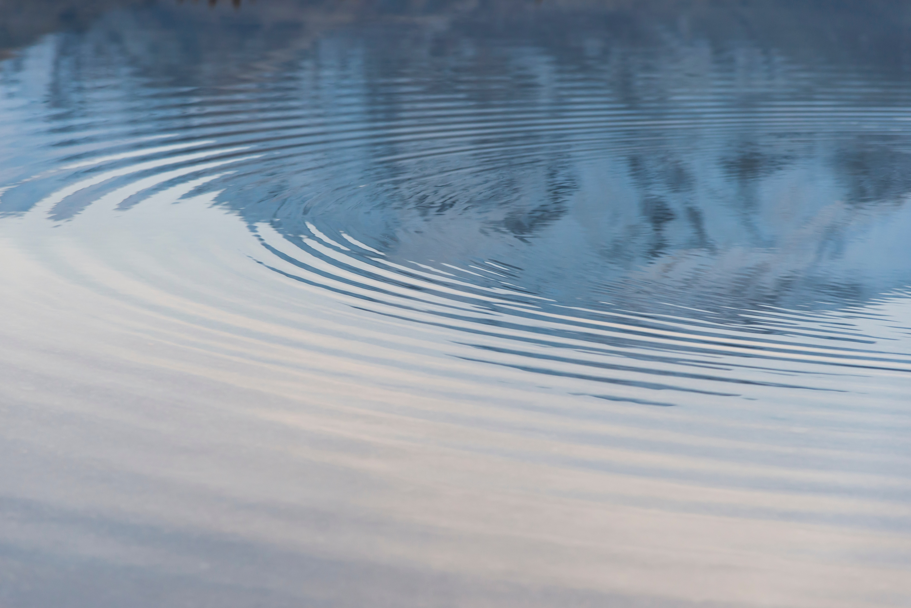

What is the water cycle?
Introduction
The water cycle is how water moves around the earth. The three main stages are:
Evaporation- The water heats up and turns into water vapour, rising into the sky.
Condensation- The water vapour cools down and turns into clouds.
Precipitation- The water then falls back down as rain and snow.